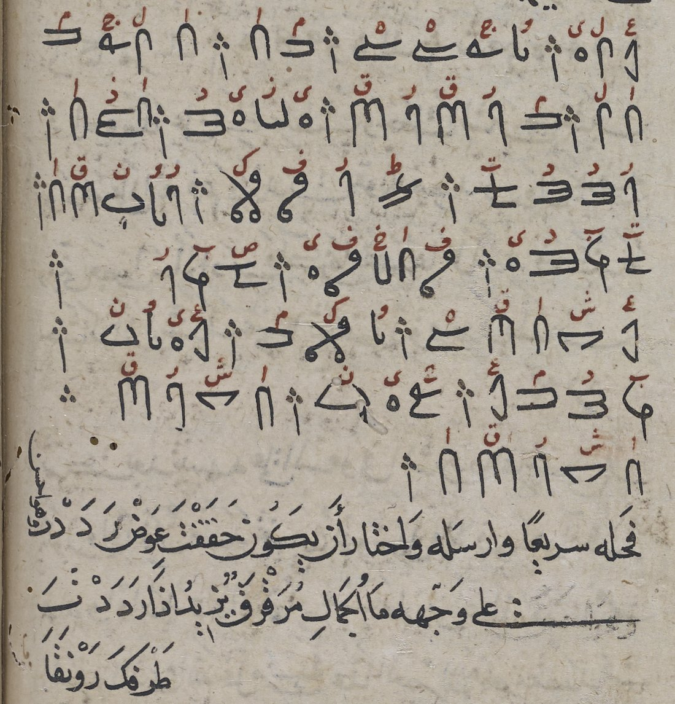
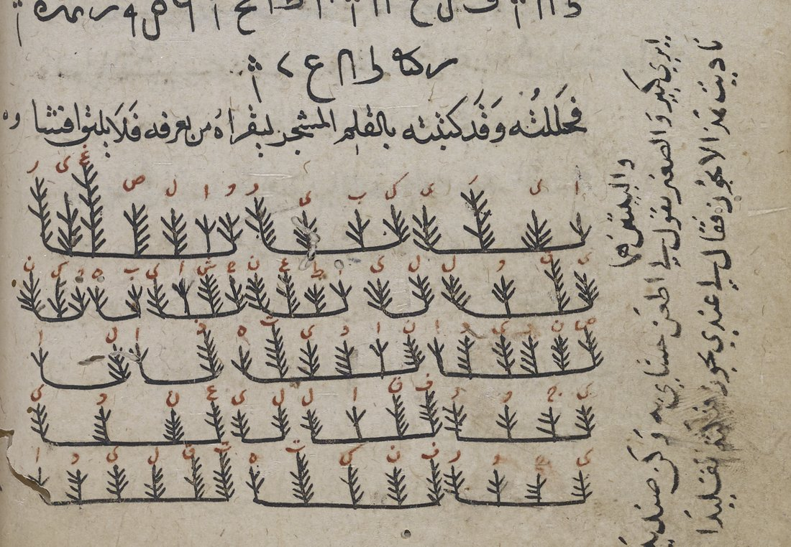

Can you read a tree? · 2 min 57 s, narrated, with captions
Manuscript images: University of Pennsylvania Libraries, Kislak Center, LJS 51, via OPenn (public domain). 3D model and readings: Cyphersolver. Synthetic voices: Kokoro (English) and Piper (Arabic).
At a glanceExisting decipherment · partial (98% of cipher tokens valued, not the word count)
- The book
- A first-person account, in Arabic, of about two hundred cipher verses and prose pieces sent between the compiler, his patron and their colleagues, each followed (with a few exceptions) by its solution. The text is of about 1330–1361; Penn dates the copy to the 15th century.
- Where
- University of Pennsylvania, Kislak Center, LJS 51, 106 leaves, beginning and end lost; images on OPenn. Not on DECODE. The last cipher (f. 106v) and the cipher on ff. 48r–48v have pages of their own.
- The compiler
- Very probably Tāj al-Dīn Ibn al-Durayhim (1312–1361), the cryptologist: he calls the Miftāḥ al-kunūz “my book” and gives al-Durayhim as the name of his ancestor. He never names himself.
- The ciphers
- The sign alphabets compared so far differ between pieces. Most use one invented sign per letter and a dotted stroke between words. Other systems include an alphabet of undotted letter shapes (taṣḥīfī), a letter-reordering text (maqlūb), and a tree script.
- What was done
- We transcribed the ciphers and their surviving solutions from Penn’s master images, rebuilt sign alphabets from the compiler’s plaintext and checked individual letters against the red glosses where legible. The visual keys by folio distinguish consistent and partial results.
- Still open
- Seven ciphers have missing or incomplete answers. The folio list gives the evidence for each. A physical check at Penn is needed to confirm the proposed order of the quires.
01 The book
LJS 51 is a small Arabic manuscript of 106 leaves, thirteen lines to the page, that has lost its beginning and its end. Penn describes it as a collection of encrypted correspondence “in approximately 150 alphabets, accompanied by transcriptions of the letters in Arabic”, possibly written in Syria in the 15th century, and names no compiler. It is more than a collection: it is a running narrative in the first person. The compiler tells who sent him each cipher, or to whom he sent one, copies the cipher, says who solved it and how quickly (“I solved it at once, straight from the pen, for its ease”), and writes out the solution. Between the pieces he comments on the craft: why a word was changed to make a cipher harder, why a lām-alif was written as one sign, what kind of cipher a visitor used to try to catch him out.
The project’s survey of the book counts 211 cipher records (“chains”) on ff. 1r–106v. Two pairs of them turned out to be single ciphers split by a misbound quire (section 07), and two ciphers have pages of their own: the last one in the volume, on f. 106v, a different cipher with its own page, and the block on ff. 48r–48v, another cipher in the same volume, with its own page. That leaves 207 ciphers on this page, with 15,203 signs in the current counts. Counts come from the line crops where a key was rebuilt and otherwise from the chain records, which include estimates.

The compiler gives full answers for 200 ciphers, covering 14,832 signs (97.6% of the corpus on this page). Three others have partial answers and four have no surviving answer. The percentage counts only signs in pieces with a full answer.
02 The compiler and his circle
The compiler never gives his name, but the book points to one man. On f. 102v he says that a visitor, Tāj al-Dīn (the name is written twice, perhaps “son of Tāj al-Dīn”), the overseer of Qaṭyā, wrote him a cipher of a kind “set out in my book Miftāḥ al-kunūz fī ḥall al-marmūz, from the chapter of al-maqlūb”, expecting him to take it for the chapter of al-ibdāl. The cryptologist Tāj al-Dīn ʿAlī b. Muḥammad Ibn al-Durayhim (1312–1361) wrote a Miftāḥ al-kunūz: its one surviving copy, edited by Mrayati, Mīr ʿĀlam and al-Ṭayyān in 1987, is titled fī īḍāḥ al-marmūz, and his contemporary al-Ṣafadī and the copy’s contents leaf give it as fī ḥall al-rumūz; its kinds of encipherment begin with al-maqlūb and continue with ibdāl. Read on the master images:
- f. 50r: defending the name “Ibn Durayhim” in a cipher verse of his own, against a correspondent who preferred “Ibn Dunaynir”, the compiler writes that “the laqab of the remote ancestor is al-Durayhim, in the diminutive” (ان لقب الجد الاعلى الدريهم مصغرا). Al-Ṣafadī played the same dinar-and-dirham pun on Ibn Dunaynir and Ibn al-Durayhim.
- f. 49r: “I think myself skilled in it, and I have written works on it” (ولي تصانيف فيه).
- f. 38v–39r: Badr al-Dīn al-Jawlānī sends the compiler a cipher of his own verse in praise of “the learned Tāj al-Dīn, scion of al-Durayhim”, whom God granted “the solving of the enciphered”.
- ff. 80r–80v: a piece whose solution, and a qasida with its answer, are “recorded in the Kitāb al-Ajwiba al-Shāmiyya”, a title on al-Ṣafadī’s list of Ibn al-Durayhim’s works (the compiler does not call it his own here).
- f. 63v: the tree script, whose rule is described among the treatise authors the editors studied only in Ibn al-Durayhim’s Miftāḥ (section 05).
So the compiler is very probably Ibn al-Durayhim, though this rests on the book’s first-person statements and not on a name. Two things in the book are not in his biographies: he says he was called to take up the vizierate of al-Shām and refused unless the mukūs (non-canonical taxes) were abolished (ff. 45v–46r), and he improvised verses on entering Alexandria (f. 99r).
The patron who solves most of the pieces, “the master” (al-makhdūm, at f. 83r “the master al-ʿAlāʾī”), is ʿAlāʾ al-Dīn ʿAlī b. Yaḥyā Ibn Faḍl Allāh, head of the chancery (kātib al-sirr) in Cairo. The evidence is f. 62r, where a cipher of his comes “after the death of his brother the emir Ṣalāḥ al-Dīn”: al-Ṣafadī records that ʿAlāʾ al-Dīn’s brother, the emir Ṣalāḥ al-Dīn Mūsā, died in Ṣafar 760 (early 1359). That dates the piece to 1359 or just after, in Ibn al-Durayhim’s last stay in Egypt; he died at Qūs in Ṣafar 762 (December 1360 or January 1361) on a mission to Abyssinia. The main correspondent is Shihāb al-Dīn Aḥmad al-Mutarjim al-Baghdādī (f. 59r gives his ism, Aḥmad), whom al-Ṣafadī calls the best solver of ciphers of his age, and who moved from Damascus to Cairo after 745 (1344–45). Others in the book include Badr al-Dīn al-Jawlānī, Amīn al-Dīn, “today qāḍī of Hama”, the khaṭīb of al-Ṣāliḥiyya in Damascus, and a grandson of a Shihāb al-Dīn Maḥmūd (probably the chancery head of that name; not checked). Pieces were enciphered for the compiler in Damascus and by him in Aleppo, and he writes of his return to Syria.
03 The ciphers
No two ciphers compared share an alphabet. In the first five that were keyed, a shape like the numeral ٨ stands for ل in one, ف in another and ع in a third; a small ring is ل in one and ي in another. Where two agree it is a single letter, and it looks like a habit of drawing a sign from the plain letter’s own shape (a ط-like sign for ط, teeth for س), not a shared key. The kinds of system:
- Substitution alphabets. Most pieces: one invented sign for each Arabic letter, written right to left, with a dotted stroke between words. Dots are not enciphered. A few alphabets give one letter two shapes (ل in 31r.2 and 13r.11, ص in 63v.1), and some write lām-alif as one sign, which the compiler mentions (f. 22r). The signs are drawn from numerals (٢, ٣, ٦, ٨), letter shapes, arches, triangles, combs and ladders.
- The taṣḥīfī. On f. 14v the compiler sends an answer “in a kind called the taṣḥīfī: one makes a single form for a letter shape and what resembles it”, so ب ت ث ن ي share one sign, ج ح خ another. The run (14v.7) has 778 signs over ff. 14v–16v, and his two poems on ff. 16v–17v are its whole plaintext: 15 sign classes for the 15 undotted letter shapes, 722 of 756 aligned signs in their class.
- The maqlūb. The visitor’s cipher of f. 102v is written in ordinary letters: each word is written as its letters in even places, then those in odd places in reverse, and the words are run together and re-spaced so that it looks like a substitution.
- The tree script (al-qalam al-mushajjar) of f. 63v: section 05.
- Other devices. On f. 83r a pear-shaped sign with a bent tail separates words. The compiler calls it a letter of the same kind as the other signs. On f. 94v two pairs of groups are optional (“if he wishes, he leaves it out”); on f. 95r two verses are enciphered in reverse order; one verse is enciphered twice in two pens (ff. 76v–77r), and so is the couplet of f. 63v.
- On f. 105v the riddle runs left to right. Its opening groups restore كم قد حللت من الالغاز معجمة where a repair obscures the clear copy on f. 106r. An isolated mark on the heading line may be a prefix or part of the heading. Its value is uncertain.
04 How the keys were rebuilt
Browse the visual keys by folio. Choose a cipher to see the manuscript signs, their assigned Arabic values and the number of occurrences. Start with the red letters on f. 57v or the disputed letter on f. 37r.
The compiler’s solutions give the text; the keys are not written anywhere. For each sign-alphabet cipher keyed so far (the taṣḥīfī run and the trees were keyed otherwise, below), the signs were labelled on line crops of the master images, one label per distinct shape, and aligned word by word with the compiler’s plaintext, using the word dividers. The key is the table of labels and letters; it is checked by asking whether every repeated shape takes one letter. Where the cipher spells a word differently from the written copy, the key follows the cipher, and the difference is recorded (in many keyed ciphers the cipher corrects the copy as first read; interlinear “variants” turn out to be part of the enciphered text).
On f. 49v the second verse ends من ابن دنينير او ابن دريهم, naming Ibn Dunaynir and Ibn al-Durayhim. The chain record already names Ibn Dunaynir. The cipher supplies the second name, Ibn al-Durayhim. On f. 51r the signs of 51r.5 include لي, also present in the reply. The second piece on that page leaves out two final alifs that appear in the clear copy. The folio-by-folio report explains the doubtful readings. The comparison with the chain records lists the count and wording differences in the new key tables.
- The tables cover 199 ciphers. The by-eye reports classify 161 letter keys as consistent and 36 as partly consistent. The two remaining tables give the 15 classes of the taṣḥīfī run and the tree-script rule. The letter keys were reconstructed from the compiler’s plaintext and await independent confirmation.
- Red letters as a check. Twenty-three of the ciphers carry a small red Arabic letter over their signs. On f. 64v the compiler describes how the patron solved a piece without writing it out, putting a few letters over their signs as hints. Across 21 sign alphabets, 1,291 of 1,296 compared signs agree with the red letter. At 37r.1 one red ب stands over a sign aligned with ي. The letters share a skeleton but differ in their dots. On f. 87r, line 7, the gloss spells من above black signs that give في. On line 10 a red غ stands over the same black sign that writes خ in two other words. The tree-script comparison is reported separately below.
- Eight ciphers have no key table. Four lack a usable plaintext. At 22v.9 the letter-shaped signs fit the written plaintext at 40%, and the fit at 3v.12 is at chance level (25 of 42). Neither written version at 98v.10 yields a substitution key. The ordinary Arabic letters at 102v.11 follow the maqlūb rule described above.
How the keys score against chance
All nine folio groups passed the same Arabic language-model test. Together they cover all 13,838 aligned sign occurrences from the 197 letter keys. Each cipher stays in the group where it begins, including ciphers that continue on another leaf. Each verdict applies to the group as a whole.
Within each cipher the key gives each sign its most frequent letter in the compiler’s plaintext. The model scores sequences of four Arabic letters, stopping at gaps and cipher boundaries. Higher scores indicate a closer fit to the model. In each group, the validator compared the reconstructed keys with 200 random assignments of values and with keys fitted to six shuffled versions of the signs. The controls pool the ciphers in each group. The table shows the strongest of the six shuffled fits.
| Folios | Ciphers | Aligned signs | Reconstructed keys | Random keys, mean | Shuffled signs, best fit |
|---|---|---|---|---|---|
| 1–12 | 24 | 1,624 | −2.677 | −4.754 | −3.007 |
| 13–24 | 10 | 1,204 | −2.741 | −4.850 | −2.855 |
| 25–36 | 24 | 1,698 | −2.660 | −4.798 | −3.070 |
| 37–48 | 22 | 1,551 | −2.733 | −4.806 | −3.044 |
| 49–60 | 24 | 1,332 | −2.735 | −4.749 | −3.007 |
| 61–72 | 22 | 1,541 | −2.945 | −5.088 | −3.195 |
| 73–84 | 24 | 1,708 | −2.762 | −4.904 | −3.051 |
| 85–96 | 26 | 1,860 | −2.637 | −4.858 | −3.144 |
| 97–106 | 21 | 1,320 | −2.752 | −4.824 | −3.000 |
The branch counts of the 79 trees on f. 63v give too short a text for the validator on their own. Adding their rule-derived letters to the ff. 61–72 group gave a score of −2.940, above the best shuffled fit of −3.225. The pooled group passed. The same couplet also appears in that group in an ordinary sign alphabet. For the separate comparison with the manuscript’s red letters, see the tree script.
At f. 14v one sign stands for a class of undotted letters. On the earlier pilot alignment, 26.4% of aligned letters differed from their sign cluster’s most frequent letter, above the validator’s 10% limit. In the separate check on the class table, 722 of 756 aligned signs match their undotted letter class.
The two ciphers with their own pages also passed individually. Those runs covered all 290 signs of f. 48r with its f. 21r continuation, and 89 aligned signs of f. 106v. They are counted separately from the folio groups above. The full results give the cipher IDs, scores and controls for each run. The batch script reproduces the tests.
05 The tree script
On f. 63v the compiler copies a couplet sent in a sign cipher, then writes: “I solved it, and I have written it in the tree script (بالقلم المشجر) so that whoever knows it may read it.” Below stand 79 little trees in five rows, with a red letter over each, and the couplet in clear runs up the right margin.

Each tree is one letter, written by the abjad words (ابجد هوز حطي كلمن سعفص قرشت ثخذ ضظغ). The number of branches on the viewer’s right gives the word (1 to 8); the number on the left gives the letter’s place in that word. So ا is a Y fork, one branch each side; ب is 2 left and 1 right; ي (third letter of the third word) is 3 and 3; ر is 2 left, 6 right; غ is 3 left, 8 right. The rule fits 78 of the 79 trees; the exception (row 3, tree 15) has its crown torn. The order is the Eastern abjad except that ص counts as the first letter of the fifth word, in both its trees. Other rules were tested and fail: the abjad numeral value (19 of 79), and alphabetical grids (10 to 28 of 79). Branch arrangement, stem height and the arcs that group the trees carry no letter.
| Left / right | 1 | 2 | 3 | 4 | 5 | 6 | 7 | 8 |
|---|---|---|---|---|---|---|---|---|
| 1 | ا | ه | ح | ك | ص | ق | ||
| 2 | ب | و | ط | ل | ع | ر | ||
| 3 | ج | ز | ي | ف | ش | ذ | غ | |
| 4 | د | ن | ت |
The table gives the letters attested in the 79 trees (left branches down, right branches across); م, س, ث, خ, ض and ظ do not occur in the couplet. The same rule, with the same sides, is described in Ibn al-Durayhim’s Miftāḥ al-kunūz (Mrayati et al., vol. 1, p. 335, with a worked example), and its editors say that among the treatise authors they studied only he mentions it. A tree alphabet without a stated rule is also drawn in the Shawq al-mustahām (Hammer, 1806), so the script was not his alone. Its use in LJS 51, and the decipherment of f. 63v, were not found reported anywhere.
The two ciphers of the page, read each on its own, correct the first reading of the couplet in four words (ايري, لا يجوز, يجوز, فنكته): the red letters already said so. It is a bawdy couplet, sent by Shihāb al-Dīn al-Mutarjim.
06 What the texts say
Most pieces are short verses, one or two lines: love poetry, praise of the patron, riddles, petitions, and replies on the same rhyme. A few are rhymed prose. Some examples, in the project’s translations:
- f. 57v, the compiler’s own verses: “On his face the water of beauty shimmers, growing in lustre each time you turn your gaze back to it”. He says on f. 58r that he changed a word to make the wordplay at the end harder to solve.
- ff. 46v and 13r, on the vizierate he refused: “I said to my soul, when it leaned towards the vizierate of al-Shām and the doing of sins: Where is reason, where is piety? Are you content that they should say, ‘This is the vizier of al-Shām’?”
- ff. 38v–39r, al-Jawlānī to the compiler: “You who ask me about a lord and son of a lord, one whom God has granted the solving of the enciphered, and whom God has clothed in beauty and splendour: he is the learned Tāj al-Dīn, scion of al-Durayhim.”
- f. 49r: the surviving cipher gives the final twelve words of two verses on cooing doves that “would not come apart except after much toil”, which leads the compiler to compare himself, unfavourably, with the patron, who had solved two harder verses quickly.
The full texts below give every surviving plaintext recorded in this survey in Arabic; for keyed ciphers it follows the cipher where the cipher and the written copy differ, and the differences are listed in the key files. The English translations follow the written copies as first read; a supplement covers the pieces the main translations miss and the corrected couplet of f. 63v. Of the 131 suspected errors of the first reading checked again on the masters, 32 were misreadings and have been corrected, 56 are the page’s own forms, and 43 could not be settled and keep their mark.
07 The misbound quire
Three breaks in the text show that quire 3 (ff. 13–20) is bound out of place, and belongs between ff. 46 and 47:
- f. 46v ends with three lines of cipher and no solution; f. 13r opens, with no heading, with four lines in the same alphabet and then the two verses they encipher. The text is split inside a word (ا|لاثام): one cipher of 77 signs.
- f. 20r announces “the third of the enciphered pieces” and gives 19 lines of cipher; f. 47r opens with no heading and eleven more. They are one cipher in one key, 336 signs, of al-Jawlānī’s eight-verse riddle (verses 1–5 on 20r–20v, 6–8 on 47r), which the compiler writes out on ff. 47r–47v.
- “The fourth of them” then follows on f. 48r: the cipher with its own page, whose last five lines are at the top of f. 21r, placing f. 21r after f. 48v. Quire 4 (ff. 21–28) probably stood here. What followed f. 12v and whether f. 28v joined f. 49r remain to be checked.
Penn’s collation gives quires 6 and 7 as four and six leaves, which straddles the place where quire 3 belongs, and a quire mark on f. 46r does not fit it either: a physical check of the binding is still owed.
08 What remains open
- 1r.2 (f. 1r, about 79 signs; catalogue 3938): the plaintext is lost with the damaged first leaf, and the red letters are too faint to read except a few.
- 12v.8 and 12v.11 (41 and 33 signs; catalogue 3939 and 3940): two pieces “each in a different pen”, which the solver “solved and wrote nothing on”. Single-use alphabets and no plaintext: too short to break alone.
- 30v.7 (81 signs, 20 groups; catalogue 3943): no plaintext anywhere in the book; a search over all 1,034 passages for its group lengths found none. Even the closest passage differs at nine of the twenty word lengths. It shares nine shapes with the alphabet of the cipher before it (30r.4), but that key does not read it. Too short to break alone.
- 3v.12 (42 signs; catalogue 3941): the written verses do not take its signs as a simple substitution.
- 88v.10: the key gives 43 of 44 signs, including the words at the damaged second line. The remaining dotted cup occurs once, at f. 88v, line 12, position 9. A hole in the clear copy on f. 89r removes the corresponding letter of ليلة الـ؟ـار. The undotted cup writes ع. A reading of غ for its dotted form remains conjectural.
- 98v.10 (51 signs; catalogue 3942): the five-sign group at the end of line 10 recurs at the end of line 13. Neither the full nor the shortened verse on f. 99r repeats a word. Allowing one surplus sign in every possible position, the best substitution for the shortened verse matches 24 of its 50 letters. Shuffling the same letters reached that score or better in 187 of 500 trials.
- All readings and translations are a model’s, checked on the master images; no human Arabist has checked them.
Full texts
The transcription and the decryption of every document on this page, so that the reading can be used and checked. Short files are shown here; all are in the repository.
Images 0006-0053 (ff. 1r-16v), 40 ciphers read in part
Ff. 1r-24v: love, praise and riddle verses that the compiler, the patron and their correspondents send each other in cipher, each followed by its solution; among them a verse petition for allowances on the compiler's return to Syria (13v), the tashifi run of two poems (14v-16v) and the first five verses of al-Jawlani's eight-verse riddle (20r-20v, continued on f. 47r across the misbound quire). The first cipher (1r) lost its plaintext to damage, and the two pieces on 12v carry none.
Builds coherent sentences, but under the read bar of 95% of words read as sense (95.0% here); the holes are marked in the reading.
Transcription: cipher_0006_0053.md
Decryption: arabic_0006_0053.md
Translation: translation_0006_0053.md
Translation
# LJS 51: English for the ciphers that the eight translation files do not cover Made at write-up time (27 Nov 2026) by the model, from the plaintexts in `keys_eye/20r.8+47r.1.json`, `keys_eye/46v.11+13r.1.json` and the chain record 49r.1 (`chains_all.json`). Not checked by a human Arabist. Translation confidence is given per verse. The eight `translation_*.md` files translate the written copies as the chain records gave them on 27 Nov; where a by-eye key shows that the cipher spells a word differently, the decryption files (`texts/arabic_*.md`) follow the cipher and the key files list the differences. Note on `translation_0006_0053.md`, section 20r.8: that section translates the rhymed prose of f. 21r. The later key work showed that this prose is the plaintext of the cipher on ff. 48r-48v (with 21r l.1-5), which has its own page (`targets/ljs51f48r`), and that 20r.8 enciphers riddle verses 1-5 instead (below). ## 20r.8+47r.1 (cipher 20r l.8-20v l.13 and 47r l.1-11; the riddle in clear 47r l.13-47v l.7) One cipher of al-Jawlani's eight-verse riddle, split by the misbound quire 3. Verses 6-8 (the 47r part) are translated in `translation_0078_0101.md`, section 47r.1. Verses 1-5 as enciphered: فما وليد ربا في شهر مولده وعاد فيه قديم السن قد نحلا / وما ثياب وقد خيطت بلا ابر وما ادير لها سلك ولا فتلا / وما فتى ان تهيا هيب جانبه ولا يهاب اذا في الملبس انتعلا / وما جبان لما عان في شرف ان ابطا ساعه مبناهما بطلا / وما مساكن ترتاح القلوب لها يريدها القوم قد كانت لهم حللا 1. What is a newborn that grew up within the month of its birth, and in that month turned old in years and wasted away? (confidence medium; the new moon would answer it, not checked against the compiler's answer-verses) 2. And what are garments that were sewn without needles, with no thread passed through them and none twisted? (medium) 3. And what is a youth whose side is feared when he makes ready, but who is not feared when, dressed, he puts on his sandals? (low) 4. And what is a coward who, when he toils in a high place, if he is slow for an hour, their building is undone? (low; the syntax is a guess) 5. And what are dwellings in which hearts find rest, which the people seek, though they were once their garments (or: their halting places)? (low) Metre: basit, as verses 6-8 (not scanned line by line here). ## 46v.11+13r.1 (cipher 46v l.11-13 and 13r l.1-4; plaintext 13r l.5-7) قلت لنفسي حين مالت الى وزاره الشام وفعل الاثام / اين الحجى اين التقى تقنعي بقولهم هذا وزير الشام I said to my soul, when it leaned towards the vizierate of al-Sham and the doing of sins: / Where is reason, where is piety? Are you content that they should say, "This is the vizier of al-Sham"? (confidence high) The compiler's note on 13r l.8-9 defends تقنعي for تقنعيني (the dropped nun is allowed). The theme is the vizierate he was called to and refused (45v l.10-12; `identity_readings.md` section 6). ## 49r.1 (cipher 49r l.1-4; the verses in clear 49r l.6-7) The block enciphers only the last twelve words of the two verses: هتفن ضحى على بان بسلع سواجع كم سلين شج يرجع / سفكن دمي وما يدرين شوقا ولا يدرين يوما در دمع At forenoon the cooing doves called on the ban-trees of Sal' - how often have they consoled a grieving man, who [then] returns [to grief]? / They shed my blood, and they know nothing of longing, nor do they ever know the flow of tears. (confidence medium; the enciphered part begins at شج يرجع) The compiler says it "would not come apart except after much toil, because of its difficulty" (49r l.4-5). ## 63v.1 and 63v.trees (f. 63v; the couplet in the right margin), as corrected `translation_0126_0149.md` translates the record's earlier reading (ابري ... الاحور ... بحور وثلثه). The sign cipher, the tree script and the red letters over the trees all give four other words (`keys_eye/63v.1.json`, `63v.trees.json`): ايري كبير والصغير يقول لي اطعن حشاي به وكن صنديدا / ناديت هذا لا يجوز فقال لي عندي يجوز فنكته تقليدا My member is big, and the little one says to me: "Pierce my insides with it, and be a hero." / I cried, "This is not allowed!", and he said to me, "With me it is allowed"; so I had him, by way of imitation (taqlid). (confidence medium for the first verse, low for the point of تقليدا; metre kamil, not re-scanned)
Images 0054-0077 (ff. 25r-36v), 25 ciphers read in part
Ff. 25r-36r: verses, riddles and rhymed prose exchanged with the patron, including the red-glossed piece on f. 31r. The cipher on f. 30v (30v.7) is the only one in this range with no plaintext anywhere in the book.
Builds coherent sentences, but its word share is at or above the 95% read bar, and it stays read in part for another reason stated on this page (95% here); the holes are marked in the reading.
Transcription: cipher_0054_0077.md
Decryption
# Penn LJS 51, images 0054-0077: the compiler's decipherments The plaintext the compiler writes after each cipher (his own solution, or the solution of the patron or the correspondent that he copies), read on the OPenn master TIFFs by a model and not checked by a human Arabist. [?] marks a doubtful word. English translation: translation_0054_0077.md. ## 25r.4 والله ما ندري اذا ما فاتنا طلب اليك من الذي نتطلب ولقد ضربنا في البلاد فلم نجد احدا سواك الي المكارم ينسب (as enciphered, from the by-eye key in keys_eye/25r.4.json; written copy 25v l.1-3 (l.3 is the overflow word ينسب); answered in full) ## 25v.4 قصدتك حين ضاق الامر لما رايت الدهر انشب مخلبيه علمت بان غيرك ليس يرجي وانك كهف من ياوي اليه (as enciphered, from the by-eye key in keys_eye/25v.4.json; written copy 25v l.12-13; answered in full) ## 26r.1 لعبدك وعد قد تقدم ذكره فاوله اجر واخره شكر وقد جمعت فيك المكارم كلها فما لك عن تاخير مكرمه عذر (as enciphered, from the by-eye key in keys_eye/26r.1.json; written copy 26r l.9-10; answered in full) ## 26r.12 ما دون بابك لي باب الوذ به ولا سواك لنا مثوي ولا طلب يا خير من سمعت اذن به ورات عين ومن وفدت ابوابه العرب (as enciphered, from the by-eye key in keys_eye/26r.12.json; written copy 26v l.7-9 (l.8 is the overflow word طلب on a line of its own); answered in full) ## 26v.11 ولقد نذرت لين رايتك سالما لاصوم لله الكريم شهورا حذرا عليك من الزمان وصرفه حتي تعود مويدا منصورا (as enciphered, from the by-eye key in keys_eye/26v.11.json; written copy 27r l.7-8 (شهورا is written above l.8 as the overflow of l.7: it carries the rhyme -ura); answered in full) ## 27r.10 شويخ البحر كلني وعلقني بسني (as enciphered, from the by-eye key in keys_eye/27r.10.json; written copy 27v l.1 (ends with a stop mark of dots); answered in full) ## 27v.3 يا نفس ذا الكبر يا من اين الست من مخرج السبيلين ابوك بالامس كان من حماء وجيفه انت بعد يومين (as enciphered, from the by-eye key in keys_eye/27v.3.json; written copy 27v l.12-13; answered in full) ## 28r.2 دع الاعتراض فما الامر لك وليس بحكمك يجري الفلك ولا تشرك بالله في حكمه فمن خاض لجه بحر هلك (as enciphered, from the by-eye key in keys_eye/28r.2.json; written copy 28r l.11-12; answered in full) ## 28v.1 اذا دكت جبال الصبر دكا تري مني فوادا مستقرا سوا عندنا يوماك دهري فكن خلا واما شيت خمرا (as enciphered, from the by-eye key in keys_eye/28v.1.json; written copy 29r l.1-2 (the two ciphered verses; 28v l.9-12 are the four opening verses of the qasida, quoted for context, not the cipher text); answered in full) ## 29r.4 ما ثم الا ما يريد فدع همومك واطرح واترك خواطرك التي شغلت فوادك تنشرح (as enciphered, from the by-eye key in keys_eye/29r.4.json; written copy 29r l.11-12; answered in full) ## 29v.2 اري سرج الجزيره من بعيد كالحاظ تغازل من تغازل كان كواكب الجوزا حطت وافرغت المنازل في المنازل (as enciphered, from the by-eye key in keys_eye/29v.2.json; written copy 29v l.12-13; answered in full) ## 30r.4 وجاريه حسبناها غلاما بفتره مقله ونشاط قد راها الشيخ فانبعثت قواه وعاد الي الشباب المستجد واتبع ردفها نظرا فقالت اظن الشيخ من اكناف نجد (as enciphered, from the by-eye key in keys_eye/30r.4.json; written copy 30r l.13, 30v l.1-2; answered in full) ## 30v.7 [no plaintext: no plaintext to check. Counts: segmenter 95 signs / 24 dividers; by eye 81 signs, 20 dividers (the segmenter splits '//' signs and dotted dividers into two boxes on most lines and counts the dot boxes or strokes as signs). Expected text about 75-80 letters, about 20 words.] ## 31r.2 واني لارجو الله حتي كانني اري بجميل الظن ما الله صانع (as enciphered, from the by-eye key in keys_eye/31r.2.json; written copy 31r l.7-8 (صانع alone on l.8); answered in full) ## 31r.11 مرضت لله قوم ما فيهم من جفاني عادوا وعادوا وعادوا علي اختلاف المعاني (as enciphered, from the by-eye key in keys_eye/31r.11.json; written copy 31v l.5-6; answered in full) ## 31v.11 قد قد قد حبيبي حبل صبري كسر وسلسل الريق سلسل اذ اسرني اسر ولولو الثغر بسامه حصر بي حصر فهل سبيل الي ورده وضم الخصر (as enciphered, from the by-eye key in keys_eye/31v.11.json; written copy 32r l.10-13 (the short lines سلسل اذ اسرني اسر and وضم الخصر are the second halves, written on lines of their own); answered in full) ## 32v.3 جز بوادي عقيق دمعي وسايل فهو جار علي الخدود وسايل انا في بابهم فقير وسايل فبهم للاله خير وسايل (as enciphered, from the by-eye key in keys_eye/32v.3.json; written copy 32v l.11-12; answered in full) ## 33r.4 منشور فضلك بين الناس مشهور ولفظك الدر منظوم ومنثور ان كنت وافيت مصرا والعراق فجي بمثل قول الحاجري النوم منكور (as enciphered, from the by-eye key in keys_eye/33r.4.json; written copy 33r l.13-14 and 33v l.1-2 (ومنثور and النوم منكور are the line ends written on lines of their own); answered in full) ## 33v.6 حلي علمك حقا لكل سمع تشنف فخد ونظر مقابلي في عاشق حال عنف (as enciphered, from the by-eye key in keys_eye/33v.6.json; written copy 33v l.10-11; answered in full) ## 33v.12 من ذا يلوم كيما اذا سلا او تخنف ارقي السلاليم اهوي فما عساي اصنف (as enciphered, from the by-eye key in keys_eye/33v.12.json; written copy 34r l.4-5; answered in full) ## 34r.8 هيات كميتنا لكوب ولجام ليست بكميت لركوب ولجام كم سام سياها بما عملك سام هذا ولكم حام علي ذلك حام (as enciphered, from the by-eye key in keys_eye/34r.8.json; written copy 34v l.3-4; answered in full) ## 34v.6 احييت باحسانك من كان ضعيف يا من بمنيف بابه الناس تطيف من لطفك قد شرفني كل ظريف مولاي مني يكتب توقيع شريف (as enciphered, from the by-eye key in keys_eye/34v.6.json; written copy 35r l.1-4 (تطيف and شريف are the line ends written on lines of their own); answered in full) ## 35r.6 سل قلبك فهو بالنبا خبير يخبرك فكم بان ضمير لضمير اني لك مثلما نشا مجتهد في قصدك والنجح علي الرب يسير (as enciphered, from the by-eye key in keys_eye/35r.6.json; written copy 35v l.2-3; answered in full) ## 35v.8 اي من لطراز ملك مصر حلا كم رمز مترجم اتاه حلا تشريفك لي لمر عيشي حلا ما حل بان تذكرني ما حلا (as enciphered, from the by-eye key in keys_eye/35v.8.json; written copy 36r l.8-9; answered in full) ## 36r.11 احنو عليك وفي فوادي لوعه واصد عنك ووجه ودي مقبل ومتي هممت بوصل يرك ردني وله اليك وشافع لك اول (as enciphered, from the by-eye key in keys_eye/36r.11.json; written copy 36v l.11-12; answered in full)
Translation: translation_0054_0077.md
Images 0078-0101 (ff. 37r-13r), 22 ciphers
Ff. 37r-48r: al-Jawlani's verse praising 'Taj al-Din, scion of al-Durayhim' for solving ciphers (38v-39r), his verse praising Ibn Fadl Allah (39r-39v), a cant text in the qalam qummi (37v), the compiler's verses on being excused from the vizierate of al-Sham (45v-46r, and 46v continued on the misbound f. 13r) and the last three verses of the riddle (47r).
Transcription: cipher_0078_0101.md
Decryption
# Penn LJS 51, images 0078-0101: the compiler's decipherments The plaintext the compiler writes after each cipher (his own solution, or the solution of the patron or the correspondent that he copies), read on the OPenn master TIFFs by a model and not checked by a human Arabist. [?] marks a doubtful word. English translation: translation_0078_0101.md and translation_supplement.md. ## 37r.1 النهار قد طلبه فاقبل العبد نحوكم عجلا فلم يجدكم فقبل العشيه (as enciphered, from the by-eye key in keys_eye/37r.1.json; written copy 37r l.6-7; answered in full) ## 37r.11 بزجاجتين قطعت عمري وعليهما عولت دهري فزجاجه ملئت بحبر وزجاجه ملئت بخمر فبذي ابث حكمتي وبذي ازيل هموم صدري (as enciphered, from the by-eye key in keys_eye/37r.11.json; written copy 37v l.7-9; answered in full) ## 37v.12 ركشذ زوهشوثول هفهل سزاو رهنف اغوس ففع طخفخف ابغراو سهنف اوغطفذ نفدف كبيذ غون زو شهنف هو خف ومخ اهو وبيذ اهو وهنف (as enciphered, from the by-eye key in keys_eye/37v.12.json; written copy 38r l.8-11 (two verses, four hemistichs rhyming in -hnf, in the Sasanian cant); answered in full) ## 38v.10 ايا سايلي عن سيد وابن سيد ومن قد حباه الله حل المترجم ومن قد كساه الله حسنا وبهجه هو الحبر تاج الدين نجل الدريهم (as enciphered, from the by-eye key in keys_eye/38v.10.json; written copy 39r l.7-8; the last word is split: الد at the end of l.8 and رهم (with a tooth, = ريهم) in the left margin; answered in full) ## 39r.10 جذبت دواعي النفس عن طلب المني وقلت لها كفي عن الطلب المر فان ابن فضل الله صار بكفه مدار حيا بالرزق دايبه تجري (as enciphered, from the by-eye key in keys_eye/39r.10.json; written copy 39v l.7-10 (l.8 and l.10 are the short ends of the two hemistich lines, centred); answered in full) ## 39v.12 حياه المنازل سكانها هم روحها وهي جسمانها اضات بمن حلها بهجه كما حل بالعين انسانها وللظاعنين عن الديار كان الاحبه اوطانها (as enciphered, from the by-eye key in keys_eye/39v.12.json; written copy 40r l.12-13 and 40v l.1 (the third verse runs over to the top of the next page); answered in full) ## 40v.5 زدت عزا وزدت فضلا عميما وراينا عدوك المهموما ثم لا زلت في نعيم وسعد من اله ما زال برا رحيما (as enciphered, from the by-eye key in keys_eye/40v.5.json; written copy 40v l.12-13; answered in full) ## 41r.3 من صب في خد يه دمعه فانها من قلبه تقطر لان سحب العين سياره لكنها من بحره تمطر (as enciphered, from the by-eye key in keys_eye/41r.3.json; written copy 41r l.10-11; answered in full) ## 41v.8 اذا قلت ما بي يا بثينه قاتلي من الوجد قالت ثابت ويزيد (as enciphered, from the by-eye key in keys_eye/41v.8.json; written copy 41v l.13 (one verse; 42r l.1 is a new heading, nothing runs over); answered in full) ## 42r.2 اتتني تؤنبني بالبكا فاهلا بها وبتانيبها وقالت وفي قولها حكمه اتبكي بعين تراني بها فقلت لو استحسنت غيركم امرت السهاد بتعذيبها (as enciphered, from the by-eye key in keys_eye/42r.2.json; written copy 42r l.11-13; answered in full) ## 42v.3 سالت خطا بالقبول يبين عن حظي لديك فزدت في هجراني فغدوت محزونا اذوب صبابه ثكﻻن قد قصت العدي بهواني (as enciphered, from the by-eye key in keys_eye/42v.3.json; written copy 42v l.11-12; answered in full) ## 43r.1 كل من مد للوري خير باع زاده الله بالمكارم طولا (as enciphered, from the by-eye key in keys_eye/43r.1.json; written copy 43r l.4; answered in full) ## 43r.6 سالت زمانا هل بيك جود فقال نعم ولكن القليل (as enciphered, from the by-eye key in keys_eye/43r.6.json; written copy 43r l.9; answered in full) ## 43r.11 سقوني وقالوا لا تغن ولو سقوا جبال حنين ما سقوني لغنت (as enciphered, from the by-eye key in keys_eye/43r.11.json; written copy 43v l.1-2 (runs over the page; l.2 is the single word لغنت); answered in full) ## 43v.11 اذا افتر من جون الغمائم بارقه بكا الورق من خبت الاناعم وادقه بدمع كان الريح تنثر لولوا علي خد روض سندسي حدايقه (as enciphered, from the by-eye key in keys_eye/43v.11.json; written copy 44r l.5-8 (l.6 and l.8 are the centred ends of the two verses); answered in full) ## 44r.10 واذا صفا لك من زمانك واحد فهو المراد واين ذاك الواحد واذا رايت من الزمان مسره فاغنم فان هوي الزمان معاند (as enciphered, from the by-eye key in keys_eye/44r.10.json; written copy 44v l.4-7; لك is written in the right margin of l.4 as an insertion; answered in full) ## 44v.9 وفينا فلم نفلح وخانوا فافلحوا فوا عجبا من محسن ومسي (as enciphered, from the by-eye key in keys_eye/44v.9.json; written copy 44v l.13 (45r l.1 is commentary, nothing runs over); answered in full) ## 45r.2 رب ورقا هتوف بالضحي ذات شجو صدحت في فنن فبكاي ربما ارقها وبكاها ربما ارقني (as enciphered, from the by-eye key in keys_eye/45r.2.json; written copy 45r l.8-9 (l.9's last word is stretched: ار ـــــ قني); answered in full) ## 45r.11 شكري لفضلك يا ابن يحيي خالد فقت الاولي ومدايح المداح ولقد تساوي ظاهرا وسريره متسربلا بردي تقي وصلاح (as enciphered, from the by-eye key in keys_eye/45r.11.json; written copy 45v l.6-9 (l.7 and l.9 are the centred ends of the two verses); answered in full) ## 45v.13 كم حاز مولاي باعفاي من وزاره الشام من الاجر اعظم بها لكن مشقاتها مشتقه حقا من الوزر (as enciphered, from the by-eye key in keys_eye/45v.13.json; written copy 46r l.8-9; answered in full) ## 46r.11 اقول لهم لما طلبت لان الي وزاره شام قول غير مدلس لقد هزلت حتي بدا من هزالها كلاها وحتي سامها كل مفلس (as enciphered, from the by-eye key in keys_eye/46r.11.json; written copy 46v l.6-9 (l.7 and l.9 are the centred ends of the verses); answered in full) ## 46v.11+13r.1 قلت لنفسي حين مالت الي وزاره الشام وفعل الاثام اين الحجي اين التقي تقنعي بقولهم هذا وزير الشام (as enciphered (keys_eye/46v.11+13r.1.json); the clear copy differs in a few words, see that file; answered in full)
Translation: translation_0078_0101.md
Translation
# LJS 51: English for the ciphers that the eight translation files do not cover Made at write-up time (27 Nov 2026) by the model, from the plaintexts in `keys_eye/20r.8+47r.1.json`, `keys_eye/46v.11+13r.1.json` and the chain record 49r.1 (`chains_all.json`). Not checked by a human Arabist. Translation confidence is given per verse. The eight `translation_*.md` files translate the written copies as the chain records gave them on 27 Nov; where a by-eye key shows that the cipher spells a word differently, the decryption files (`texts/arabic_*.md`) follow the cipher and the key files list the differences. Note on `translation_0006_0053.md`, section 20r.8: that section translates the rhymed prose of f. 21r. The later key work showed that this prose is the plaintext of the cipher on ff. 48r-48v (with 21r l.1-5), which has its own page (`targets/ljs51f48r`), and that 20r.8 enciphers riddle verses 1-5 instead (below). ## 20r.8+47r.1 (cipher 20r l.8-20v l.13 and 47r l.1-11; the riddle in clear 47r l.13-47v l.7) One cipher of al-Jawlani's eight-verse riddle, split by the misbound quire 3. Verses 6-8 (the 47r part) are translated in `translation_0078_0101.md`, section 47r.1. Verses 1-5 as enciphered: فما وليد ربا في شهر مولده وعاد فيه قديم السن قد نحلا / وما ثياب وقد خيطت بلا ابر وما ادير لها سلك ولا فتلا / وما فتى ان تهيا هيب جانبه ولا يهاب اذا في الملبس انتعلا / وما جبان لما عان في شرف ان ابطا ساعه مبناهما بطلا / وما مساكن ترتاح القلوب لها يريدها القوم قد كانت لهم حللا 1. What is a newborn that grew up within the month of its birth, and in that month turned old in years and wasted away? (confidence medium; the new moon would answer it, not checked against the compiler's answer-verses) 2. And what are garments that were sewn without needles, with no thread passed through them and none twisted? (medium) 3. And what is a youth whose side is feared when he makes ready, but who is not feared when, dressed, he puts on his sandals? (low) 4. And what is a coward who, when he toils in a high place, if he is slow for an hour, their building is undone? (low; the syntax is a guess) 5. And what are dwellings in which hearts find rest, which the people seek, though they were once their garments (or: their halting places)? (low) Metre: basit, as verses 6-8 (not scanned line by line here). ## 46v.11+13r.1 (cipher 46v l.11-13 and 13r l.1-4; plaintext 13r l.5-7) قلت لنفسي حين مالت الى وزاره الشام وفعل الاثام / اين الحجى اين التقى تقنعي بقولهم هذا وزير الشام I said to my soul, when it leaned towards the vizierate of al-Sham and the doing of sins: / Where is reason, where is piety? Are you content that they should say, "This is the vizier of al-Sham"? (confidence high) The compiler's note on 13r l.8-9 defends تقنعي for تقنعيني (the dropped nun is allowed). The theme is the vizierate he was called to and refused (45v l.10-12; `identity_readings.md` section 6). ## 49r.1 (cipher 49r l.1-4; the verses in clear 49r l.6-7) The block enciphers only the last twelve words of the two verses: هتفن ضحى على بان بسلع سواجع كم سلين شج يرجع / سفكن دمي وما يدرين شوقا ولا يدرين يوما در دمع At forenoon the cooing doves called on the ban-trees of Sal' - how often have they consoled a grieving man, who [then] returns [to grief]? / They shed my blood, and they know nothing of longing, nor do they ever know the flow of tears. (confidence medium; the enciphered part begins at شج يرجع) The compiler says it "would not come apart except after much toil, because of its difficulty" (49r l.4-5). ## 63v.1 and 63v.trees (f. 63v; the couplet in the right margin), as corrected `translation_0126_0149.md` translates the record's earlier reading (ابري ... الاحور ... بحور وثلثه). The sign cipher, the tree script and the red letters over the trees all give four other words (`keys_eye/63v.1.json`, `63v.trees.json`): ايري كبير والصغير يقول لي اطعن حشاي به وكن صنديدا / ناديت هذا لا يجوز فقال لي عندي يجوز فنكته تقليدا My member is big, and the little one says to me: "Pierce my insides with it, and be a hero." / I cried, "This is not allowed!", and he said to me, "With me it is allowed"; so I had him, by way of imitation (taqlid). (confidence medium for the first verse, low for the point of تقليدا; metre kamil, not re-scanned)
Images 0102-0125 (ff. 49v-49r), 24 ciphers
Ff. 49r-60v: an exchange of short cipher verses between the compiler and the patron, with a few brought by others: the verses on 49r solved only 'after much toil', the compiler's own verse with the name Ibn Durayhim and his defence of it (49v-50r), and seven red-glossed pieces (51v-59v).
Transcription: cipher_0102_0125.md
Decryption
# Penn LJS 51, images 0102-0125: the compiler's decipherments The plaintext the compiler writes after each cipher (his own solution, or the solution of the patron or the correspondent that he copies), read on the OPenn master TIFFs by a model and not checked by a human Arabist. [?] marks a doubtful word. English translation: translation_0102_0125.md and translation_supplement.md. ## 49v.2 تحققت اني عند حرك قطره وكنت اراني اوحدا في المترجم اذا عرض المرموز فانحل جوهرا من ابن دنينير او ابن دريهم (as enciphered, from the by-eye key in keys_eye/49v.2.json; written copy 49v l.10-11 (the last word المترجم written small under l.10 as l.11) and l.12; answered in full) ## 50v.1 رسايلكم انس لنا فتصدقوا وعودوا بها ان الكريم يعود ولا تقطعوا وصلا سوي من جزازه تمنوا بارسال لها وتجودوا (as enciphered, from the by-eye key in keys_eye/50v.1.json; written copy 51r l.3-4 (next page, after 'وهما' at the end of 51r l.2); answered in full) ## 51r.5 لست اشكو الزمان اذ جاد لي منك بدر من بحر علم تدفق (as enciphered, from the by-eye key in keys_eye/51r.5.json; written copy 51v l.7 (next page, after the plaintext of the following chain); answered in full) ## 51r.10 احين علمت انك نور عيني واني لا اري حتي اراك جعلت مغيب شخصك عن عياني يغيب كل مخلوق سواك (as enciphered, from the by-eye key in keys_eye/51r.10.json; written copy 51v l.4-5; each verse ends with a detached alif written apart in the left margin (اراك ا / سواك ا), the itlaq alif the compiler says he dropped from the cipher; not counted in the text; answered in full) ## 51v.9 كيف لا اشكر دهرا جاد لي منك بحبر يقذف الدر كبحر زاخر من لج حبر (as enciphered, from the by-eye key in keys_eye/51v.9.json; written copy 52r l.1-2 (next page); answered in full) ## 52v.4 يا ربيعا فوق وصف جامعا من غير حصر نسبتي صححت منه قابل الكسر بجبر (as enciphered, from the by-eye key in keys_eye/52v.4.json; written copy 52v l.9-10; answered in full) ## 53r.3 قيد ودي لديك مطلق ما اوليتني يا ولي كل علي (as enciphered, from the by-eye key in keys_eye/53r.3.json; written copy 53r l.7 (one verse; ما written above مطلق); answered in full) ## 53v.6 حمدك والمدح داب ذي ادب يقوم منه ببعض ما يجب (as enciphered, from the by-eye key in keys_eye/53v.6.json; written copy 53v l.13 (after 'والبيت' at the end of l.12); answered in full) ## 54r.2 كم ساحه شرفت غداه حللتها وقضيه قد اشكلت فحللتها (as enciphered, from the by-eye key in keys_eye/54r.2.json; written copy 54r l.8-9 (فحللتها alone on l.9); answered in full) ## 54v.1 جزيل علم وحجي ذو منطق محجاج جعلت نهجي مدحه وما له من هاج (as enciphered, from the by-eye key in keys_eye/54v.1.json; written copy 54v l.6-7 (the rhyme letter of محجاج is written apart at the left end of l.6: محجا ... ج); answered in full) ## 54v.9 نديمي قم فاسقني بكاس كبير هني ودع كاسنا اطلسا ولا تسقني مع دني (as enciphered, from the by-eye key in keys_eye/54v.9.json; written copy 55r l.2-3 (next page); answered in full) ## 55r.7 فعلام تعتمدين قتل متيم افما نهاك يا سعاد نهاك حللت قتلي وهو غير محلل فبطرفك الفتاك من افتاك (as enciphered, from the by-eye key in keys_eye/55r.7.json; written copy 55v l.1-2 (next page); answered in full) ## 55v.5 شهود ودي تودي وهي صادقه وحاكم القلب يدري ما به حكما هب انني مدع قد غاب شاهده اما ضميرك يقضي في ما علما (as enciphered, from the by-eye key in keys_eye/55v.5.json; written copy 55v l.12-13 (كمابه حكما alone on l.13) and 56r l.1 (next page); answered in full) ## 56r.4 ولا حسن الا سماع حديثكم مشافهه يملي علي فانقلي وامري موقوف عليك وليس لي علي احد الا عليك معول (as enciphered, from the by-eye key in keys_eye/56r.4.json; written copy 56r l.10-11; answered in full) ## 56r.13 ارض لمن غاب عنك غيبته فذاك ذنب عقابه فيه (as enciphered, from the by-eye key in keys_eye/56r.13.json; written copy 56v l.5; answered in full) ## 56v.8 نديمك في كل وقت جذل ومستنصر بك ما ان خذل (as enciphered, from the by-eye key in keys_eye/56v.8.json; written copy 56v l.12 (l.13 glosses جذل: الجذل الفرح والجذلان مثل فرحان); answered in full) ## 57r.2 حاشاك ان يثنيك عني كاشح فبصدق وعدك يطمين ضميري (as enciphered, from the by-eye key in keys_eye/57r.2.json; written copy 57r l.8-9 (ضميري alone on l.9); answered in full) ## 57v.4 علي وجهه ما الجمال مرقرق يزيد اذا رددت طرفك رونقا تبدي فاخفي صبر عشاقه وكم عيون بدمع حين اشرق اشرقا (as enciphered, from the by-eye key in keys_eye/57v.4.json; written copy 57v l.12-13 and 58r l.1-2 (next page; اشرقا alone on 58r l.2, written اشر قا); answered in full) ## 58r.11 مولي سمي جدوده ونجوده كالليث في وثباته وثباته ذو راحه وكفت ندي وكفت ردي فقضت بهلك عداته وعداته (as enciphered, from the by-eye key in keys_eye/58r.11.json; written copy 58v l.8-9 (next page); answered in full) ## 59r.2 كم حرقه لي في الحشا من ولد لي قد نشا كنا ءشا رشده فما نشا كما نشا (as enciphered, from the by-eye key in keys_eye/59r.2.json; written copy 59r l.8-9; answered in full) ## 59v.7 مودته تدوم لكل هول وهل كل مودته تدوم (as enciphered, from the by-eye key in keys_eye/59v.7.json; written copy 60r l.1 (next page; the last word spread out as تد و م); answered in full) ## 60r.5 اه وا شوقا لمن قد بدلوا صفو عيشي بعدهم بالكدر كلما اشتقت تمنيتهم ضاع عمري في المني واعمري (as enciphered, from the by-eye key in keys_eye/60r.5.json; written copy 60r l.12-13; answered in full) ## 60v.2 ان كنت تريدنا فدع لذاتك لا يخطر غير ذكرنا في ذاتك ضيعت بطول هجرنا اوقاتك كم فاتك من وصالنا كم فاتك (as enciphered, from the by-eye key in keys_eye/60v.2.json; written copy 60v l.11-12; answered in full) ## 49r.1 شج يرجع سفكن دمي وما يدرين شوقا ولا يدرين يوما در دمع (as enciphered, from the by-eye key in keys_eye/49r.1.json; written copy 49r l.6-7 (two verses). The block enciphers only the last 12 words: شج يرجع / سفكن دمي وما يدرين شوقا ولا يدرين يوما در دمع (master: شجٍ with tanwin, دمعِ with kasra - not شجو / دمعي as in earlier records); answered in full)
Translation: translation_0102_0125.md
Translation
# LJS 51: English for the ciphers that the eight translation files do not cover Made at write-up time (27 Nov 2026) by the model, from the plaintexts in `keys_eye/20r.8+47r.1.json`, `keys_eye/46v.11+13r.1.json` and the chain record 49r.1 (`chains_all.json`). Not checked by a human Arabist. Translation confidence is given per verse. The eight `translation_*.md` files translate the written copies as the chain records gave them on 27 Nov; where a by-eye key shows that the cipher spells a word differently, the decryption files (`texts/arabic_*.md`) follow the cipher and the key files list the differences. Note on `translation_0006_0053.md`, section 20r.8: that section translates the rhymed prose of f. 21r. The later key work showed that this prose is the plaintext of the cipher on ff. 48r-48v (with 21r l.1-5), which has its own page (`targets/ljs51f48r`), and that 20r.8 enciphers riddle verses 1-5 instead (below). ## 20r.8+47r.1 (cipher 20r l.8-20v l.13 and 47r l.1-11; the riddle in clear 47r l.13-47v l.7) One cipher of al-Jawlani's eight-verse riddle, split by the misbound quire 3. Verses 6-8 (the 47r part) are translated in `translation_0078_0101.md`, section 47r.1. Verses 1-5 as enciphered: فما وليد ربا في شهر مولده وعاد فيه قديم السن قد نحلا / وما ثياب وقد خيطت بلا ابر وما ادير لها سلك ولا فتلا / وما فتى ان تهيا هيب جانبه ولا يهاب اذا في الملبس انتعلا / وما جبان لما عان في شرف ان ابطا ساعه مبناهما بطلا / وما مساكن ترتاح القلوب لها يريدها القوم قد كانت لهم حللا 1. What is a newborn that grew up within the month of its birth, and in that month turned old in years and wasted away? (confidence medium; the new moon would answer it, not checked against the compiler's answer-verses) 2. And what are garments that were sewn without needles, with no thread passed through them and none twisted? (medium) 3. And what is a youth whose side is feared when he makes ready, but who is not feared when, dressed, he puts on his sandals? (low) 4. And what is a coward who, when he toils in a high place, if he is slow for an hour, their building is undone? (low; the syntax is a guess) 5. And what are dwellings in which hearts find rest, which the people seek, though they were once their garments (or: their halting places)? (low) Metre: basit, as verses 6-8 (not scanned line by line here). ## 46v.11+13r.1 (cipher 46v l.11-13 and 13r l.1-4; plaintext 13r l.5-7) قلت لنفسي حين مالت الى وزاره الشام وفعل الاثام / اين الحجى اين التقى تقنعي بقولهم هذا وزير الشام I said to my soul, when it leaned towards the vizierate of al-Sham and the doing of sins: / Where is reason, where is piety? Are you content that they should say, "This is the vizier of al-Sham"? (confidence high) The compiler's note on 13r l.8-9 defends تقنعي for تقنعيني (the dropped nun is allowed). The theme is the vizierate he was called to and refused (45v l.10-12; `identity_readings.md` section 6). ## 49r.1 (cipher 49r l.1-4; the verses in clear 49r l.6-7) The block enciphers only the last twelve words of the two verses: هتفن ضحى على بان بسلع سواجع كم سلين شج يرجع / سفكن دمي وما يدرين شوقا ولا يدرين يوما در دمع At forenoon the cooing doves called on the ban-trees of Sal' - how often have they consoled a grieving man, who [then] returns [to grief]? / They shed my blood, and they know nothing of longing, nor do they ever know the flow of tears. (confidence medium; the enciphered part begins at شج يرجع) The compiler says it "would not come apart except after much toil, because of its difficulty" (49r l.4-5). ## 63v.1 and 63v.trees (f. 63v; the couplet in the right margin), as corrected `translation_0126_0149.md` translates the record's earlier reading (ابري ... الاحور ... بحور وثلثه). The sign cipher, the tree script and the red letters over the trees all give four other words (`keys_eye/63v.1.json`, `63v.trees.json`): ايري كبير والصغير يقول لي اطعن حشاي به وكن صنديدا / ناديت هذا لا يجوز فقال لي عندي يجوز فنكته تقليدا My member is big, and the little one says to me: "Pierce my insides with it, and be a hero." / I cried, "This is not allowed!", and he said to me, "With me it is allowed"; so I had him, by way of imitation (taqlid). (confidence medium for the first verse, low for the point of تقليدا; metre kamil, not re-scanned)
Images 0126-0149 (ff. 61r-73r), 23 ciphers
Ff. 61r-72v: a riddle of opposite imperatives (61r), the patron's verse sent after his brother's death (62r), a bawdy couplet enciphered twice on f. 63v, in signs and in the tree script, ciphers from and to Shihab al-Din al-Mutarjim, and one from Amin al-Din, qadi of Hama.
Transcription: cipher_0126_0149.md
Decryption
# Penn LJS 51, images 0126-0149: the compiler's decipherments The plaintext the compiler writes after each cipher (his own solution, or the solution of the patron or the correspondent that he copies), read on the OPenn master TIFFs by a model and not checked by a human Arabist. [?] marks a doubtful word. English translation: translation_0126_0149.md and translation_supplement.md. ## 61r.3 صل اقطع مر انه انفع ضر ابك اضحك اسر بع صل اهجر رح اغد افن ابق شر خر زد انقص خذ اعط اشحط ادن اعل اسفل اشف امرض ابد عد خن اوف اغدر اجمل هزل جد اضلل اخلص (as enciphered, from the by-eye key in keys_eye/61r.3.json; written copy 61v l.1-4; answered in full) ## 62r.3 يخوتا شحطت دياركم فعسي تخصونا بطيف كري (as enciphered, from the by-eye key in keys_eye/62r.3.json; written copy 62v l.8 (after والبيت at the end of l.7); answered in full) ## 62v.10 واذا ما رياح جودك هبت صار قول العذال فيها هبا (as enciphered, from the by-eye key in keys_eye/62v.10.json; written copy 63r l.1; answered in full) ## 63v.1 ايري كبير والصغير يقول لي اطعن حشاي به وكن صنديدا / ناديت هذا لا يجوز فقال لي عندي يجوز فنكته تقليدا (as enciphered, from the by-eye key in keys_eye/63v.1.json; written copy 63v right margin, 2 lines turned 90 degrees (a short word above them, read by the pilot as والبسيط, not part of the text); answered in full) ## 63v.trees ايري كبير والصغير يقول لي اطعن حشاي به وكن صنديدا / ناديت هذا لا يجوز فقال لي عندي يجوز فنكته تقليدا (as enciphered, from the tree-script rule in keys_eye/63v.trees.json; written copy 63v right margin (same couplet as chain 63v.1); answered in full) ## 64r.3 ولها اذا رفع الازار مكلثم كالقعب كب لحاجه لم يدفع فاذا طعنت يعض عضه مشفق واذا سللت يمص مصه مرضع (as enciphered, from the by-eye key in keys_eye/64r.3.json; written copy 64r l.10-11; answered in full) ## 65r.5 ذات هن فيه خصال ثمان لي اليه تشوق وحنين ابيض ناعم عريض سمين صلب ناشف سخين (as enciphered, from the by-eye key in keys_eye/65r.5.json; written copy 65r l.12-13; answered in full) ## 65v.2 تزوجت بصبي امرد يناسبها تخرج ويخرج ويسعوا في سباسبها ترجع ويرجع وقد حازوا مكاسبها تحاسبه مثلما يقعد يحاسبها (as enciphered, from the by-eye key in keys_eye/65v.2.json; written copy 65v l.9-10; answered in full) ## 65v.13 قالت لترب معها منكره لوقفتي هذا الذي نراه من قالت فتي متم يشكو الجوي قالت بمن قالت بمن قالت بمن (as enciphered, from the by-eye key in keys_eye/65v.13.json; written copy 66r l.7-8; answered in full) ## 66r.10 ما اطيب ما يكون من تهواه في حضنك والنعاس قد غشاه اوصيك اذا تذبلت عيناه امتص لسانه وقبل فاه (as enciphered, from the by-eye key in keys_eye/66r.10.json; written copy 66v l.8-9; answered in full) ## 66v.11 ما قولك فيمن ظفرت كفاه بالقهوه والحب وما يهواه هل يغتنم اللذه من دنياه ام يحجم خوف كاشح يغشاه (as enciphered, from the by-eye key in keys_eye/66v.11.json; written copy 67r l.4-5; answered in full) ## 67r.8 من تحرز كافات الشتا كفاه مع حسن عطيته بمن ينشاه سلمت اموره الي مولاه لا امره بها ولا انهاه (as enciphered, from the by-eye key in keys_eye/67r.8.json; written copy 67v l.1-2; answered in full) ## 67v.9 ما احسن ما مشي الي الشمع وقط ما انعم خده وما انعم قط قد خط عذاره وما يعرف خط ما اعشقني فيه اذا نام وخط (as enciphered, from the by-eye key in keys_eye/67v.9.json; written copy 68r l.3-4; answered in full) ## 68r.6 وكان محمر الشقيق اذا تصوب او تصعد اعلام ياقوت نشرن علي رماح من زبرجد (as enciphered, from the by-eye key in keys_eye/68r.6.json; written copy 68r l.12-13; answered in full) ## 68v.2 يا هادمي ها دمي رقه وخلصني اخير مما تعذبني وتمغصني تصل وترجع بهجرانك تنغصني بسي عسل وزنابيسه ت (as enciphered, from the by-eye key in keys_eye/68v.2.json; written copy 68v l.8-9; answered in full) ## 68v.13 ثنغبت فتنتني غبث في غيبي غنث خفيف بجنبي خففت جيبي تجنبتني جفتني ضجث في خيبي فتنث ذبث غزتني بينث شيبي (as enciphered, from the by-eye key in keys_eye/68v.13.json; written copy 69r l.7-10 (each verse ends with a short word on its own line: جبي, شبيي); answered in full) ## 69r.12 والصب قد ظل عنه هواه يمنا تاره يجوب وشاما فهو نضو الوف غارب نضو قد اري كل مطلع منه نجما (as enciphered, from the by-eye key in keys_eye/69r.12.json; written copy 69v l.6-7; answered in full) ## 69v.11 فرقادي سطا عليه سهادي ودموعي كوابل غيداق ان رضوا مدمعي وسهدي فهذا منهم محمول علي الاحداق (as enciphered, from the by-eye key in keys_eye/69v.11.json; written copy 70r l.8-9; answered in full) ## 70r.11 زر حي سعدي فقد نامت عيون عدي وساعدتك كما تهوي دياجير ولا تضع فرصه عنت فاحزمنا مبادر فاز لا يثنيه تاخير (as enciphered, from the by-eye key in keys_eye/70r.11.json; written copy 70v l.5-7; answered in full) ## 70v.11 كم قلت لصاحبي بنجد لا تبع خيامهم فتقتل فيها رشا اذا تثني من قامته الغصون تخجل (as enciphered, from the by-eye key in keys_eye/70v.11.json; written copy 71r l.5-6; answered in full) ## 71r.10 انه الدولاب دلت انه في فرط حزن كان يسقي ويغني صار يسقي ويغني (as enciphered, from the by-eye key in keys_eye/71r.10.json; written copy 72r l.4-5 (cipher form: انه in place of حالة, per 72r l.9-10); answered in full) ## 72r.12 يا مسعدي رقمك زهر ونثر الدر ما فهت به لافظا ما ذل من كنت له ناصرا او ضاع من كنت له حافظا (as enciphered, from the by-eye key in keys_eye/72r.12.json; written copy 72v l.6-7; answered in full) ## 72v.9 غيث جود همي وغوث جود كم حمي لاجيا وحيي عديما فهو ذخر لقاصديه وفخر ظاعنا كان دهره او مقيما (as enciphered, from the by-eye key in keys_eye/72v.9.json; written copy 73r l.2-3; answered in full)
Translation: translation_0126_0149.md
Translation
# LJS 51: English for the ciphers that the eight translation files do not cover Made at write-up time (27 Nov 2026) by the model, from the plaintexts in `keys_eye/20r.8+47r.1.json`, `keys_eye/46v.11+13r.1.json` and the chain record 49r.1 (`chains_all.json`). Not checked by a human Arabist. Translation confidence is given per verse. The eight `translation_*.md` files translate the written copies as the chain records gave them on 27 Nov; where a by-eye key shows that the cipher spells a word differently, the decryption files (`texts/arabic_*.md`) follow the cipher and the key files list the differences. Note on `translation_0006_0053.md`, section 20r.8: that section translates the rhymed prose of f. 21r. The later key work showed that this prose is the plaintext of the cipher on ff. 48r-48v (with 21r l.1-5), which has its own page (`targets/ljs51f48r`), and that 20r.8 enciphers riddle verses 1-5 instead (below). ## 20r.8+47r.1 (cipher 20r l.8-20v l.13 and 47r l.1-11; the riddle in clear 47r l.13-47v l.7) One cipher of al-Jawlani's eight-verse riddle, split by the misbound quire 3. Verses 6-8 (the 47r part) are translated in `translation_0078_0101.md`, section 47r.1. Verses 1-5 as enciphered: فما وليد ربا في شهر مولده وعاد فيه قديم السن قد نحلا / وما ثياب وقد خيطت بلا ابر وما ادير لها سلك ولا فتلا / وما فتى ان تهيا هيب جانبه ولا يهاب اذا في الملبس انتعلا / وما جبان لما عان في شرف ان ابطا ساعه مبناهما بطلا / وما مساكن ترتاح القلوب لها يريدها القوم قد كانت لهم حللا 1. What is a newborn that grew up within the month of its birth, and in that month turned old in years and wasted away? (confidence medium; the new moon would answer it, not checked against the compiler's answer-verses) 2. And what are garments that were sewn without needles, with no thread passed through them and none twisted? (medium) 3. And what is a youth whose side is feared when he makes ready, but who is not feared when, dressed, he puts on his sandals? (low) 4. And what is a coward who, when he toils in a high place, if he is slow for an hour, their building is undone? (low; the syntax is a guess) 5. And what are dwellings in which hearts find rest, which the people seek, though they were once their garments (or: their halting places)? (low) Metre: basit, as verses 6-8 (not scanned line by line here). ## 46v.11+13r.1 (cipher 46v l.11-13 and 13r l.1-4; plaintext 13r l.5-7) قلت لنفسي حين مالت الى وزاره الشام وفعل الاثام / اين الحجى اين التقى تقنعي بقولهم هذا وزير الشام I said to my soul, when it leaned towards the vizierate of al-Sham and the doing of sins: / Where is reason, where is piety? Are you content that they should say, "This is the vizier of al-Sham"? (confidence high) The compiler's note on 13r l.8-9 defends تقنعي for تقنعيني (the dropped nun is allowed). The theme is the vizierate he was called to and refused (45v l.10-12; `identity_readings.md` section 6). ## 49r.1 (cipher 49r l.1-4; the verses in clear 49r l.6-7) The block enciphers only the last twelve words of the two verses: هتفن ضحى على بان بسلع سواجع كم سلين شج يرجع / سفكن دمي وما يدرين شوقا ولا يدرين يوما در دمع At forenoon the cooing doves called on the ban-trees of Sal' - how often have they consoled a grieving man, who [then] returns [to grief]? / They shed my blood, and they know nothing of longing, nor do they ever know the flow of tears. (confidence medium; the enciphered part begins at شج يرجع) The compiler says it "would not come apart except after much toil, because of its difficulty" (49r l.4-5). ## 63v.1 and 63v.trees (f. 63v; the couplet in the right margin), as corrected `translation_0126_0149.md` translates the record's earlier reading (ابري ... الاحور ... بحور وثلثه). The sign cipher, the tree script and the red letters over the trees all give four other words (`keys_eye/63v.1.json`, `63v.trees.json`): ايري كبير والصغير يقول لي اطعن حشاي به وكن صنديدا / ناديت هذا لا يجوز فقال لي عندي يجوز فنكته تقليدا My member is big, and the little one says to me: "Pierce my insides with it, and be a hero." / I cried, "This is not allowed!", and he said to me, "With me it is allowed"; so I had him, by way of imitation (taqlid). (confidence medium for the first verse, low for the point of تقليدا; metre kamil, not re-scanned)
Images 0150-0173 (ff. 73r-84v), 24 ciphers
Ff. 73r-84r: petitions about a chancery decree (73v-74v), one verse enciphered twice in two pens (76v-77r), verses that allude to the names of scripts and are recorded in the Kitab al-Ajwiba al-Shamiyya (80r-81r), and a cipher whose word dividers are themselves a cipher letter (83r).
Transcription: cipher_0150_0173.md
Decryption
# Penn LJS 51, images 0150-0173: the compiler's decipherments The plaintext the compiler writes after each cipher (his own solution, or the solution of the patron or the correspondent that he copies), read on the OPenn master TIFFs by a model and not checked by a human Arabist. [?] marks a doubtful word. English translation: translation_0150_0173.md. ## 73r.5 فتي ما له عز بذله العين حاجب فباب نداه لا يري قط مغلقا حياض سماح مع رياض فضايل فلله ما اندي واذكي واعبقا (as enciphered, from the by-eye key in keys_eye/73r.5.json; written copy 73r l.12-13; answered in full) ## 73v.8 يقبل الارض وينهي باني جا توقيعي في بهدله شكرا لاحسانك فارسم له سياقه واليا والحمدله (as enciphered, from the by-eye key in keys_eye/73v.8.json; written copy 74v l.6-7; answered in full) ## 74r.3 ايا بحرا يجود بلا مغيض ويا بدرا يضي بلا محاق تصدق بالسياقه ان نفسي تناهت في السياق الي التراقي (as enciphered, from the by-eye key in keys_eye/74r.3.json; written copy 74v l.2-3 (one verse, a hemistich per line); answered in full) ## 75r.1 وما انا وحدي قلت ذا الشعر كله ولكن لشعري فيك من نفسه شعر (as enciphered, from the by-eye key in keys_eye/75r.1.json; written copy 75r l.5; answered in full) ## 76r.4 لنا من نشرها ومن المحيا وقامتها وناظرها السقيم تارج عنبر وضيا بدر ولين اراكه ولحاظ ريم (as enciphered, from the by-eye key in keys_eye/76r.4.json; written copy 76v l.1-2 (after ومما at the end of 76r l.13); answered in full) ## 76v.6 ظفرت بخط من ظلوم تعاظمت ظواهره للناظر المتيقظ (as enciphered, from the by-eye key in keys_eye/76v.6.json; written copy 76v l.10; answered in full) ## 77r.3 ظفرت بخط من عظيم تعاظمت ظواهره للناظر المتيقظ (as enciphered, from the by-eye key in keys_eye/77r.3.json; written copy 77r l.7; answered in full) ## 77r.10 حبيبي علي الدنيا اذا غبت وحشه فيا قمري قل لي متي انت طالع سروري ان تبقي بخير وغبطه واني من الدنيا بذلك قانع (as enciphered, from the by-eye key in keys_eye/77r.10.json; written copy 77v l.5-6 (the rhyme words طالع and قانع written below the line ends); answered in full) ## 77v.9 تتوق نفسي الي من بالحمي باتت تتلو حديث ليالينا التي فاتت تتيه بالحسن مذ روض الحشي اقتاتت تتلف حياتي وكم نفس بها ماتت (as enciphered, from the by-eye key in keys_eye/77v.9.json; written copy 78r l.5-6; answered in full) ## 78r.12 اي بدر تم ثقه جودر حوي خدري دع ذكر ريا زهي سولي شفا صدري ضيفي طلع ظبي علي غلو في قدري كم لي معه نوم هم والضد لا يدري (as enciphered, from the by-eye key in keys_eye/78r.12.json; written copy 78v l.7-10; answered in full) ## 78v.13 فبت الثم عينيها ومن عجب اني اقبل اسيافا سفكن دمي (as enciphered, from the by-eye key in keys_eye/78v.13.json; written copy 79r l.3; answered in full) ## 79r.5 وكنت متي ارسلت طرفك رايدا لقلبك يوما اتعبتك المناظر رايت الذي لا كله انت قادر عليه ولا عن بعضه انت صابر (as enciphered, from the by-eye key in keys_eye/79r.5.json; written copy 79r l.11-12; answered in full) ## 79v.1 اري دهري علي ضعفي تعدا وجاوز حد تهذيبي وعدا وصيرني له غرضا معدا وايام تعد علي عدا وحظي من رغايبها يفوت (as enciphered, from the by-eye key in keys_eye/79v.1.json; written copy 79v l.6-8 (a five-hemistich stanza: two on l.6, one centred on l.7, two on l.8); answered in full) ## 79v.10 كمالي ما به نقص يشين وعلمي كله در ثمين وعند سراتها ودي مبين مكاني من تخصصه مكين وحالي من خصاصتها تموت (as enciphered, from the by-eye key in keys_eye/79v.10.json; written copy 80r l.3-5 (five hemistichs: two on l.3, one centred on l.4, two on l.5); answered in full) ## 80r.9 غبار ذنوبي في الرقاع محقق بنسخ كرام كاتبين عدول وتوقيع ريحاني رجاي لعفو من يناديك ثلث الليل عند نزول (as enciphered, from the by-eye key in keys_eye/80r.9.json; written copy 80v l.3-4 (after the word at the end of l.2, read وهي; the draft read ومن and called the lines verse fragments); answered in full) ## 80v.9 نسخ ريحان عارضيك نسيب بحواشي رقاع حسنك ملحق ثلث عمر العذول فيك يقضي في غبار فليت وصلي محقق (as enciphered, from the by-eye key in keys_eye/80v.9.json; written copy 81r l.2-3; answered in full) ## 81r.5 ان تكن قاتلي بطومار هجر وبشعر العذار قلبي معلق فلقد باح سلوتي عنك توقيع غدا مزوجا وذلك اوثق (as enciphered, from the by-eye key in keys_eye/81r.5.json; written copy 81r l.12-13; answered in full) ## 81v.6 ضرب في الضريب ام اغريض وابتسام ام در ثغر وميض ضعفت منتي امرض جسمي ودواي طرف ضعيف مريض (as enciphered, from the by-eye key in keys_eye/81v.6.json; written copy 82r l.1-2; answered in full) ## 82r.9 يا سيدي قد احالوني علي غزه وما حصل من وصولي لا ولا رزه يحتاج من جاهك العالي الي همه عسي يجي ما يوصلني الي غزه (as enciphered, from the by-eye key in keys_eye/82r.9.json; written copy 82v l.3-4; answered in full) ## 82v.7 اصبحت اشهر شكري من صنايعكم واضمر الود فيكم اي اضمار (as enciphered, from the by-eye key in keys_eye/82v.7.json; written copy 82v l.11 (اضمارا written small above the left end of l.12, as the end of the verse); answered in full) ## 83r.1 فكم كم وكم كم كم وكم كم وكم وكم وكم كم وكم يا لليل هذا التناسيا (as enciphered, from the by-eye key in keys_eye/83r.1.json; written copy 83r l.6-7 (the alif of التناسا written at the end of l.6, لتناسا on l.7); [كم] is a small كم written above the fourth word; answered in full) ## 83r.13 يا ليتني اشبه المزي امين الدين لما لحظته بعينك بالرضا واللين قد نال ما ساله في غايه التمكين اما اليمن قد قوي عزمي واما الصين (as enciphered, from the by-eye key in keys_eye/83r.13.json; written copy 83v l.8-10 (واللين written small above the left end of l.9 as the end of l.8; عزمي واما الصين on the short l.10); answered in full) ## 83v.12 وكنت اظن اني بانتماي اليك انال مل الراحتين وما ذنبي سوي حبي رضاكم فقلت الياس احدي الراحتين (as enciphered, from the by-eye key in keys_eye/83v.12.json; written copy 84r l.6-7; answered in full) ## 84r.12 حلمك وجودك وبيتك في النهي مشهور ومن يلذ بجنابك لم يزل منصور اني تركت قليبي سيدي مكسور طلبت منك جمل ما اعطيتني عصفور (as enciphered, from the by-eye key in keys_eye/84r.12.json; written copy 84v l.7-10 (l.8 and l.10 short; the alif of اني stands in the right margin of l.9); answered in full)
Translation: translation_0150_0173.md
Images 0174-0197 (ff. 85r-96v), 26 ciphers read in part
Ff. 85r-96r: eight red-glossed pieces; exchanges in which the compiler sends a verse of al-Mutanabbi and the patron answers in cipher on the same rhyme (93v, 95r-96r); a cipher with optional words (94v); a line on Alexandria in the 730s AH (86r). The second line of the clear copy of 88v.10 is damaged. The signs recover all but one letter of the piece.
Builds coherent sentences, but its word share is at or above the 95% read bar, and it stays read in part for another reason stated on this page (98% here); the holes are marked in the reading.
Transcription: cipher_0174_0197.md
Decryption
# Penn LJS 51, images 0174-0197: the compiler's decipherments The plaintext the compiler writes after each cipher (his own solution, or the solution of the patron or the correspondent that he copies), read on the OPenn master TIFFs by a model and not checked by a human Arabist. [?] marks a doubtful word. English translation: translation_0174_0197.md. ## 85r.5 ما ركب الذل في طباعي وليس للذل قط داعي (as enciphered, from the by-eye key in keys_eye/85r.5.json; written copy 85r l.8; answered in full) ## 85r.10 قد راينا من الزمان عيونا كم قلوب انكت وابكت عيونا اذ عرضنا بمولمات ملمات تمنينا اذ عرضنا المنونا (as enciphered, from the by-eye key in keys_eye/85r.10.json; written copy 85v l.4-5; answered in full) ## 85v.8 مجال الكلام مجال وسيع وصمت لساني حصن منيع ونفس الشريف اذا ما تهان تعز ولا يعتريها خضوع (as enciphered, from the by-eye key in keys_eye/85v.8.json; written copy 86r l.1-2; answered in full) ## 86r.4 ان عينا لن تراكم دمعها فيه تراكم (as enciphered, from the by-eye key in keys_eye/86r.4.json; written copy 86r l.6; answered in full) ## 86r.9 هذي جراحي طريه بالدما تصيح وقاتلي نصب عيني قط ما يبرح فقال خذ لك مداوي قلت ذا يقبح الي جرحني يداويني وذا الاصلح (as enciphered, from the by-eye key in keys_eye/86r.9.json; written copy 86v l.4-7 (l.5 and l.7 are the short run-over ends of l.4 and l.6); answered in full) ## 86v.9 عقد تسعين ضيق صدري ورزقي واتساع الدنا همومي وفكري (as enciphered, from the by-eye key in keys_eye/86v.9.json; written copy 86v l.13-14; answered in full) ## 87r.3 كم من قوي قوي في تقلبه مسدد الراي عنه الرزق منحرف وكم ضعيف ضعيف بات في سعه كانه من خليج البحر يغترف هذا دليل علي ان الاله له في الخلق سر خفي ليس ينكشف (as enciphered, from the by-eye key in keys_eye/87r.3.json; written copy 87r l.13-14 and 87v l.1-3; answered in full) ## 87v.8 كم فاضل فاضل في العلم قد قعدت به الليالي فلا جاه ولا ذهبا وناقص ناقص ذي ثروه كثرت يثني عليه وان لم يكتسب ادبا هذا دليل علي عجز الانام فلا سعي يفيد بل المقدور ما كتبا (as enciphered, from the by-eye key in keys_eye/87v.8.json; written copy 88r l.5-10; answered in full) ## 88r.12 لا سعيد من ليس يسعده جد سعيد وطاير مامون ولسان مثل الحسام وقلب صادق عزمه وراي رصين (as enciphered, from the by-eye key in keys_eye/88r.12.json; written copy 88v l.5-6; answered in full) ## 88v.10 مشعوفه بخلافي لو اقول لها يوم العذير لقالت ليله ال?ار (as enciphered, from the by-eye key in keys_eye/88v.10.json; written copy 89r l.1-2; answered in part: partly consistent: all repeated signs keep one value; the dotted cup in the final word has no second example. The damaged line gives ليلة الـ؟ـار.) ## 89r.4 مستهاما خالي الوفاض من الهم غريب الديار ناي العرين وقطوب الخطوب قد ساورتني وحروب الكروب قد تعريني (as enciphered, from the by-eye key in keys_eye/89r.4.json; written copy 89r l.13 and 89v l.1; answered in full) ## 89v.4 عندي حدايق جود من نوالكم قد مسها عطش فليسق من غرسا تداركوها وفي اغصانها ورق فلن يعود اخضرار العود ان يبسا (as enciphered, from the by-eye key in keys_eye/89v.4.json; written copy 89v l.12-13 and 90r l.1-2; answered in full) ## 90r.4 انتم لنا غيث ونحن كروضه تهمي سحايبكم علينا نورق ان تمنعوا عنا فواضل جودكم ونوالكم فبذيل من نتعلق (as enciphered, from the by-eye key in keys_eye/90r.4.json; written copy 90r l.11-12; answered in full) ## 90v.1 فوا حسرتاه ووا غربتاه ووا وحشتاه ووا اسفاه لقد صنع الدهر بي ما تري فيا ليت شعري اما قد كفاه (as enciphered, from the by-eye key in keys_eye/90v.1.json; written copy 90v l.8-9; answered in full) ## 90v.12 وكيف يكون حال غريب دار كييب من خطوب تعتريه يكرر في النهار وبالدياجي الا موت يباع فاشتريه (as enciphered, from the by-eye key in keys_eye/90v.12.json; written copy 91r l.6-7; answered in full) ## 91r.12 بقربكم كنت في صباح وبعدكم بعدكم مسا انت لمن يتقيك دا وانت للمر تجي دوا انت لمن يحتميك نار انت لمن يصطفيك ما (as enciphered, from the by-eye key in keys_eye/91r.12.json; written copy 91v l.6-8; answered in full) ## 91v.10 وكنت اذا ما جيت قربت مجلسي ووجهك من ما البشاشه يقطر فمن لي بالعين التي كنت سيدي الي بها في سالف الدهر تنظر (as enciphered, from the by-eye key in keys_eye/91v.10.json; written copy 92r l.4-7 (l.5 and l.7 are the run-over words يقطر and تنظر); answered in full) ## 92r.10 خطوب توالت علي مدنف كييب تثبطه عن خطاب فكم يطلب الموت من ربه ولكن لكل انتها كتاب (as enciphered, from the by-eye key in keys_eye/92r.10.json; written copy 92v l.4-5 (عن خطاب written at the end of l.4, the last word above the line; faint erased letters precede خطوب at the start of l.4); answered in full) ## 92v.9 يسامي القرن ان قرن تيممه فيعتضده فياخذه فيرفعه فيخفضه فيقتصده فيدمغه فيحطمه فيخضمه فيزدرده (as enciphered, from the by-eye key in keys_eye/92v.9.json; written copy 93r l.6-8; answered in full) ## 93v.1 ومن تعلق به حمه الافاعي يعش ان فاته اجل عليلا (as enciphered, from the by-eye key in keys_eye/93v.1.json; written copy 93v l.5; answered in full) ## 93v.7 وفي تقصير انياب الافاعي دليل ان تعيش مدا طويلا (as enciphered, from the by-eye key in keys_eye/93v.7.json; written copy 93v l.11; answered in full) ## 94r.3 كيف السبيل الي مرضاه من عظمت علي جفوته حتي يعود كما قد ضاقت الارض بي حتي لقد سيمت نفسي الحياه وقد طال الصدود اما (as enciphered, from the by-eye key in keys_eye/94r.3.json; written copy 94r l.12-14; answered in full) ## 94v.5 يمين عبيد لهم خاضع منيب بعهدهم واثق باني ما حلت عن حبهم وحفظ ودادهم الصادق (as enciphered, from the by-eye key in keys_eye/94v.5.json; written copy 94v l.12-13 (short form 95r l.2-3: بمن [?] عبيد لهم بعهدهم واثق / باني ما حلت عن ودادهم الصادق); answered in full) ## 95r.10 ربما جاد بالنفيس ضنين مثلما جاد بالنفوس الرجال سمح الطرف بالدما بعد دمع فلهذين في الخدود انهمال (as enciphered, from the by-eye key in keys_eye/95r.10.json; written copy 95v l.8 then 95v l.6 (cipher order); written on 95v as l.6 'the second, which is the first' and l.8 'the first, which is the second'; answered in full) ## 95v.10 فلولا الجود ما سادت اناس ولولا الذنب لم يعرف حليم (as enciphered, from the by-eye key in keys_eye/95v.10.json; written copy 95v l.13; answered in full) ## 96r.2 باي وجه اتلقاكم واي درع اتوقاكم ما لي سوي عفوك يا سيدي فليس للمذنب الاكم خلاصه الجوهر كنتم لذا من در بحر اتنقاكم فلا تضيعوا عبدكم وارحموا احياكم الرب وابقاكم (as enciphered, from the by-eye key in keys_eye/96r.2.json; written copy 96r l.12-13 and 96v l.1-2; answered in full)
Translation: translation_0174_0197.md
Images 0198-0217 (ff. 97r-106v), 23 ciphers read in part
Ff. 97r-106r: three red-glossed pieces, the maqlub (letter-reordering) cipher of the nazir of Qatya with the compiler's mention of 'my book Miftah al-kunuz' (102v-103r), and a riddle in deliberately odd words (105v); neither candidate for 98v.10 fits its repeated groups, and no substitution key was recovered. The last cipher in the volume (106v) has its own page.
Builds coherent sentences, but its word share is at or above the 95% read bar, and it stays read in part for another reason stated on this page (96% here); the holes are marked in the reading.
Transcription: cipher_0198_0217.md
Decryption
# Penn LJS 51, images 0198-0217: the compiler's decipherments The plaintext the compiler writes after each cipher (his own solution, or the solution of the patron or the correspondent that he copies), read on the OPenn master TIFFs by a model and not checked by a human Arabist. [?] marks a doubtful word. English translation: translation_0198_0217.md. ## 97r.1 دع الذنب والعذر في جانب وكن صاحبا بالصفا والصلف فلو كان ذنب كمثل الجبال لقلنا عفا الله عما سلف (as enciphered, from the by-eye key in keys_eye/97r.1.json; written copy 97r l.8-11 (l.9 and l.11 are run-over words); answered in full) ## 97v.2 شكر الاله نعمه موجبه لشكره فكيف شكري بره وشكره من بره (as enciphered, from the by-eye key in keys_eye/97v.2.json; written copy 97v l.6-7; answered in full) ## 97v.9 ذهاب المال في حمد واجر ذهاب لا يقال له ذهاب (as enciphered, from the by-eye key in keys_eye/97v.9.json; written copy 97v l.13; answered in full) ## 98r.2 عيد يعاد عليك من بركاته وزكا صنيعك دايما كزكاته شرفتني وذكرتني بمسمن نحرت عداك كنحره وذكاته (as enciphered, from the by-eye key in keys_eye/98r.2.json; written copy 98r l.10-11; answered in full) ## 98r.13 بني بني معاويه ابن عمرو وكان ابوك برا وفيا فاوصيكم بضيف او بجار يجاوركم فقيرا او غنيا (as enciphered, from the by-eye key in keys_eye/98r.13.json; written copy 98v l.7-8; answered in full) ## 98v.10 full (99r l.2-3): حديث قديم زوى نشر اريج شذا مندل عاطر / فحرك لي ساكنا كامنا خفوق على قلبي الطاير ; shortened (99r l.5-6): حديث قديم زوى شذا المندل العاطر / فحرك لي ساكنا على قلبي الطاير (99r l.2-3 and l.5-6; certainty medium-high (كامنا خفوق read on the master, the draft's 'كان مخفوقا' is not what is written; خفوق may carry tanwin); answered in part: not keyed: the two written forms on f. 99r do not fit the observed groups under ordinary letter substitution. Catalogue 3942 remains open.) ## 99r.10 لين شاد هذا الثغر اسكندر الوري وفضله فوق الذي كان يملك فانت سليمان الزمان وليته فلم يبق فيه للشياطين مسلك (as enciphered, from the by-eye key in keys_eye/99r.10.json; written copy 99v l.5-8 (l.6 and l.8 are run-over words); answered in full) ## 99v.13 ليس بالاسكندريه غير اسماك طريه (as enciphered, from the by-eye key in keys_eye/99v.13.json; written copy 100r l.4; answered in full) ## 100r.8 غامزته بناظري ولم افه بكلمه جاوبني حاجبه لكن بنون العظمه (as enciphered, from the by-eye key in keys_eye/100r.8.json; written copy 100v l.2-3; answered in full) ## 100v.6 يا ليل طل او لا تطل لا بد لي ان اسهرك لو بات عندي قمري ما بت ارعي قمرك (as enciphered, from the by-eye key in keys_eye/100v.6.json; written copy 100v l.12-13; answered in full) ## 101r.2 يا غصن نقا قوامه مياد ايام رضاك كلها اعياد ما اكتم حزني عندما تهجرني الا حذرا ان تشمت الحساد (as enciphered, from the by-eye key in keys_eye/101r.2.json; written copy 101r l.9-10; answered in full) ## 101v.2 رمي حر قلبي بلحظ له رشا ما دري قدر ما قد رمي وقد كان قدم احسانه ولكنه قد ما قدما (as enciphered, from the by-eye key in keys_eye/101v.2.json; written copy 101v l.9-10; answered in full) ## 102r.1 رايت قويقا اذ تجاوز حده له زجل في جريه وضجيج وكان ثعال جالسا بشفيره فشبهته بحرا لديه خليج (as enciphered, from the by-eye key in keys_eye/102r.1.json; written copy 102r l.8-9; answered in full) ## 102r.12 خمر ودر وورد ريق وثغر وخد ليل وبدر وغصن شعر ووجه وقد (as enciphered, from the by-eye key in keys_eye/102r.12.json; written copy 102v l.4-5; answered in full) ## 102v.11 دامت لك النعماء سابغة وبقيت طرد الدجى الفجر / يا من اذا ذكرت مناقبه رقص الزمان وصفق الدهر (103r l.1-2; certainty high; answered in full) ## 103r.4 اكتم هوانا ان اردت رضانا واحذر تبيح بسرنا لسوانا نحن الكرام فمن اتانا قاصدا نال السعاده عندما يلقانا (as enciphered, from the by-eye key in keys_eye/103r.4.json; written copy 103r l.11-13 (l.12 and the last line are run-over words); answered in full) ## 103v.2 كل كمال له انتقاص كل تمام له سرار ما دام شي فكن قنوعا سمحا فما هنا القرار (as enciphered, from the by-eye key in keys_eye/103v.2.json; written copy 103v l.8-9; answered in full) ## 103v.11 هون الامر تعش في راحه قلما هونت الا سيهون ربما قرت عيون بشجي مرمض قد سخنت منه عيون (as enciphered, from the by-eye key in keys_eye/103v.11.json; written copy 104r l.10-11; answered in full) ## 104v.2 اذا جادت الدنيا عليك فجد بها علي الناس طرا انها تتقلب فلا الجود يفنيها اذا هي اقبلت ولا البخل يبقيها اذا هي تذهب (as enciphered, from the by-eye key in keys_eye/104v.2.json; written copy 104v l.11-12; answered in full) ## 105r.1 شاكلته بناظري ولم افه بكلمه اجابني حاجبه لكن بنون العظمه (as enciphered, from the by-eye key in keys_eye/105r.1.json; written copy 105r l.8-9; answered in full) ## 105r.11 اقبل فقلت الدنيا ادبر فقلت الاخره وصل فقلت الجنه هجر فقلت النار (as enciphered, from the by-eye key in keys_eye/105r.11.json; written copy 105v l.3-4; answered in full) ## 105v.6 كم قد حللت من الالغاز معجمه وكم اضحت لهم ما كان قد كتموا من كل عيص عويصه بها التجمت افواه نطق عن اللغز الذي نظموا فهاك مني قولا لست ادركه طرطاش طرطش من درديه العكروا (as enciphered, from the by-eye key in keys_eye/105v.6.json; written copy 106r l.7-9; answered in full) ## 106r.11 احتج خصمي واحتججت بحجتي افلحت في حججي وخاب المحتجج (as enciphered, from the by-eye key in keys_eye/106r.11.json; written copy 106v l.2; answered in full)
Translation: translation_0198_0217.md
Key: keys.tsv
09 Sources
- University of Pennsylvania, Kislak Center, LJS 51: OPenn record and images (master TIFFs 0084_0006 to 0084_0217; f. 57v is image 0084_0119, f. 63v image 0084_0131); Digital Scriptorium DS738; Schoenberg Database SDBM_MS_15170.
- M. Mrayati, Y. Mīr ʿĀlam and M. H. al-Ṭayyān, ʿIlm al-taʿmiya wa-istikhrāj al-muʿammā ʿinda al-ʿArab, vol. 1 (Damascus, 1987): Ibn al-Durayhim’s biography pp. 100–104, the Miftāḥ al-kunūz pp. 163–187 and 309 ff., the tree script p. 335 (Internet Archive).
- al-Ṣafadī, Aʿyān al-ʿaṣr, vol. 3 pp. 519–526 (Ibn al-Durayhim) and vol. 5 pp. 490–491 (Mūsā b. Yaḥyā Ibn Faḍl Allāh); al-Wāfī bi-l-wafayāt, vol. 22 pp. 44–46 (Ibn al-Durayhim) and vol. 7 pp. 94–95 (al-Mutarjim al-Baghdādī), read in the OpenITI and Shamela texts; Ibn Ḥajar, al-Durar al-kāmina, vol. 4 pp. 125–128.
- Y. Mīr ʿĀlam, Muʿjam aʿlām al-taʿmiya (Kuwait, 2018), entries 11 and 51; J. Hammer, Ancient Alphabets and Hieroglyphic Characters Explained (London, 1806), Arabic p. 38.
- Yıldırım and Aydın, “Muʿammâyı Çöz”, GTTAD 8/18 (2026), pp. 1013–1028, which led to al-Mutarjim’s entry in al-Ṣafadī.
- No study, edition or decipherment of LJS 51 was found (the 2006 Schoenberg catalogue, Transformation of Knowledge, p. 43, and the 1996 sale catalogues were not seen).
The chain records, transcriptions, by-eye keys, translations, identity and codicology notes are in the repository (targets/ljs51corpus/; the page pass in research/ljs51_pass/). Manuscript images: University of Pennsylvania Libraries, public domain, via OPenn.
Cite this page
Daniel Bourdeau, “The cipher casebook, Penn LJS 51 (c. 1330–1361)”, Cyphersolver, posted 27 November 2026, updated 28 November 2026, repository commit 6a0824b206, https://cyphersolver.com/ljs51corpus.html.